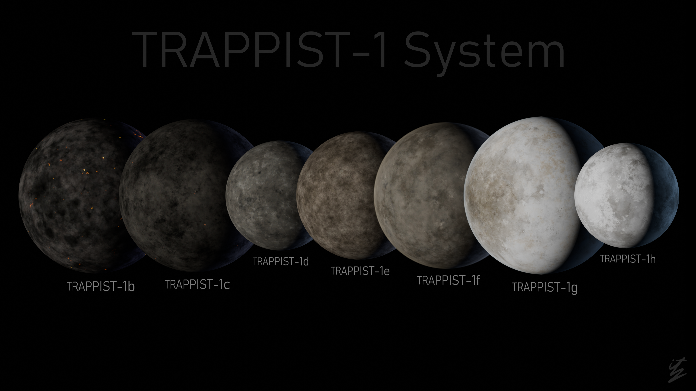

¿Pensabas que la Tierra era única?
Más allá de nuestro sistema solar existe TRAPPIST-1, un sistema formado por una estrella pequeña y siete planetas de tamaño parecido al de la Tierra.
Algunos de estos mundos son estudiados por sus posibles condiciones para albergar agua líquida.
Iniciar exploración
Un sistema diferente
TRAPPIST-1 se encuentra a unos 40 años luz de la Tierra, en la constelación de Acuario. Sus siete planetas orbitan muy cerca de una estrella enana roja.